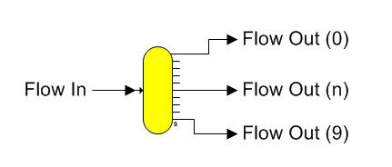

Distributor A distributor station is used to split one input flow into as many as 10 output flows (numbered from 0 to 9) with each having the same characteristics as the input flow. The shape for a distributor station is shown below.

General Features Distributor stations are used to split one flow stream into two, or more, flows. The amount of the split can be specified as either a percentage of the input flow, or as a quantity of weight units (kg/hr for SI units and lb/hr for US units). Output flows from a distributor that are given a specified quantity of flow are called specified flows. Also, a distributor station is used to satisfy required flows. That is, when a distributor has output flows that have a quantity of flow required by another station, the required flows will be satisfied first and then any flows with specified quantities will be satisfied next. Finally, the remaining flow, or overflow, will go out the first flow stream that is neither required nor specified. If there is more than one output flow that is neither required nor specified, then all of the excess flow will go out the port with the lowest numerical number. The output ports are numbered from ‘0’ to ‘9’ (zoom in on the distributor station to see the beginning and ending port numbers).
The input flow to a distributor station is made required by Sugars when all of its output flows are required and/or specified. When the distributor station input flow is made required, Sugars searches for the origination of the input flow and makes this flow required; however, if flow from the station cannot be required, an error will occur. Either remove a quantity entered for one of the distributor output flows, or change the flow diagram if the input flow to the distributor cannot be made a required flow.
A summary of the possible distributor conditions is as follows.
I. Distributor station with its output flows specified to be a percentage of the input flow. Each output flow will have a percent quantity of the input flow as its output flow quantity. All of the properties of each output flow will be the same as the input flow properties; i.e., the pressure, temperature, component fractions, color and solubility coefficients of the output flows all will be the same as the input flow.
II. Distributor station with its output flows specified on a quantity weight basis. In each case below, the properties of each output flow will be the same as the input flow properties.
1. All output flows are required by other stations; i.e., Sugars has determined that each output flow is required by other stations. Here, Sugars will make the input flow to the distributor a required flow.
2. Output flows from the distributor are partly required, specified and/or unspecified.
a) The input flow quantity is greater than necessary for the required and specified quantity output flows. The excess output flow (i.e., the amount that is greater than required by the specified and required flows) will overflow to the lowest numbered output port that is unspecified and goes to another station. If there are not any unspecified output flows going to other stations, then the excess flow will go out the lowest numbered output port that is unspecified for a flow leaving the model. And, if all flows leaving the model are specified, then the overflow will go out the first output flow leaving the model regardless of the amount specified and a warning/comment message will be given.
b) The input flow quantity is less than necessary for the required and specified quantity flows. The deficiency of flow will be taken from the specified output flows until all of the specified flow has been removed (warning/comment message will be given). If there still is not sufficient input flow to satisfy the required output flows after all of the specified flow quantities have been made zero, a warning/comment message will be given by Sugars when it does the balance calculations.
c) The input flow is an external flow. The quantity of the input flow will be adjusted automatically by Sugars to satisfy all of the required and/or specified flows leaving the distributor.
In all cases, output flows from a distributor that leave the model (i.e., flow diagram), and are specified to have a zero quantity, are considered specified by Sugars to have zero flow unless the flow out of the model is the only flow, or the only non-required/unspecified flow out of the distributor; in which case, it will become the overflow line. Zero quantity output flows to other stations are always considered unspecified. If more than one output flow to another station is unspecified, Sugars will send all excess flow down the lowest numbered output port that has a connected flow line and subsequent ports with unspecified output flows will not have any flow quantity.
Distributor stations can be cascaded if more than ten output flows are required, and if all output flows are required and/or specified, this information will be passed back to the previous distributor so that the output flow line from the previous distributor will be considered a required flow.